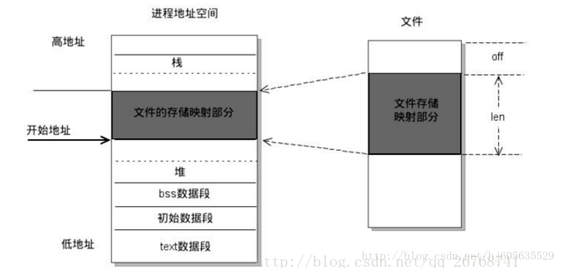
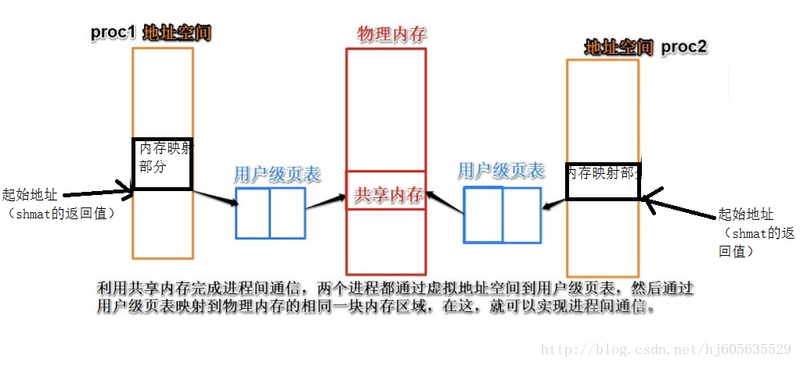
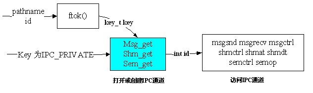

共享内存探真
前言
当有人问起共享内存的实现的时候，被人问倒了。
共享内存类型
现有系统共有2类共享内存的方法：mmap、shm。下面来介绍2类的优缺点：
mmap
机制： 在磁盘上建立一个文件，每个进程存储器中，单独开辟一个空间来映射，保存到实际硬盘，实际并没有反映到主存上
优点： 存储量大
缺点： 读取和写入速度比较慢
使用方法：
int fd = open(argv[1],O_RDWR|O_CREAT|O_TRUNC,0644);
mmap(NULL,sizeof(struct STU),PROT_READ|PROT_WRITE,MAP_SHARED,fd,0);
munmap(p,sizeof(student))

shm
机制： 每个进程的共享内存都直接映射到实际物理存储器上，shm保存到物理存储器(主存)，实际的存储量直接反映到主存上
优点：进程间访问速度比磁盘快
缺点： 存储量不能非常大
使用方法：
key_t ftok(const char *pathname, int proj_id)
int shmget( key_t shmkey , int shmsiz , int flag );
void *shmat( int shmid , char *shmaddr , int shmflag );

mmap和shm的差异
1、mmap是在磁盘上建立一个文件，每个进程地址空间中开辟出一块空间进行映射。
而对于shm而言，shm每个进程最终会映射到同一块物理内存。shm保存在物理内存，这样读写的速度要比磁盘要快，但是存储量不是特别大。
2、相对于shm来说，mmap更加简单，调用更加方便，所以这也是大家都喜欢用的原因。
3、另外mmap有一个好处是当机器重启，因为mmap把文件保存在磁盘上，这个文件还保存了操作系统同步的映像，所以mmap不会丢失，但是shmget就会丢失。
shm实现
结构图示都如此明白，那共享内存功能如何实现？通过页表。

ftok将一个已存在的路径名和一个整数标识符转换成一个key_t值。
key_t ftok(const char *pathname, int proj_id)
ftok会组合三个值来产生key：
1. pathname所在的文件系统的信息。
2. 该文件在本文件系统内的索引节点号。
3. id的低序8位。
在使用shm方法时，可以通过ftok和IPC_PRIVATE的方法结合shm_get方法申请一块共享内存项。当使用shmat方法时，会将页表加载至进程的页表项中。
mmap实现

mmap的执行，仅仅是在内核中建立了文件与虚拟内存空间的对应关系。用户访问这些虚拟内存空间时，页面表里面是没有这些空间的表项的。当用户程序试图访问这些映射的空间时，于是产生缺页异常。内核捕捉这些异常，逐渐将文件载入。
所谓的载入过程，具体的操作就是read和write在管理pagecache。Vma的结构体中有很文件操作集。vma操作集中会有自己关于page cache的操作集合。这样，虽然是两种不同的系统调用，由于操作和调用触发的路径不同。但是最后还是落实到了page cache的管理。实现了文件内容的操作。
问题
- 进程是如何管理内存的